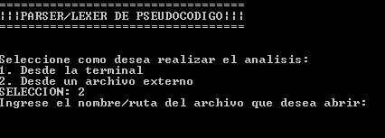

Lights Out comenzó como un juego electrónico comercializado por una firma de juguetes, Tiger Electrónicos, en el año 1995. El juego estaba diseñado en un pequeño dispositivo semejante a una calculadora con botones que se prendian y apagaban conforme los apretabas. Esta variante del juego consta de dos modos, el modo alternativo, donde las luces adyacentes a la elegida se alternaran y el modo clasico, donde al precionar una celda se alternaran las celdas pegadas a esta de manera horizontal y vertical. Tambien consta de tres dificultades "novato", donde la matriz es de 3x3, "medio" donde es de 5x5, y "avanzado" que consta de una matriz de 7x7. Este pequeño juego fue implementado en el lenguaje smalltalk a traves de pharo, como instancia de evaluacion de la materia paradigmas orientados a objetos.
Este es un analizador lexico de codigo en Pseudocodigo, que al ejectutar remarca los errores en el mismo, esta escrito en el lenguaje c y se ocuparon herramientas como el Flexer y Bison.